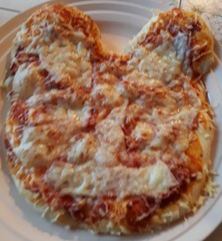

Pizza tête de Mickey

Pour faire un petit plaisir à vos enfants, faites leur une pizza Mickey. Un peu d'imagination et on fait rire ses enfants et ils aiment bien placer le jambon et le fromage et ainsi la préparation deviens une activité partagée.
Ingrédients
- 350g de farine (type55 si possible)
- 3 cuillères d'huile d'oliv
- 2 cuillères à café de sel
- 1 sachet de levure boulangère
- 3 cuillères à soupe de huile d'olive
- 25 cl d'eau tiède
- Crème ou sauce tomate pour le fond
- Jambon ou autre
- Fromage au choix
Préparation
- Mettre 350 g de farine dans un grand saladier puis ajouter successivement le sel, la levure boulangère et l'huile d'olive.
- Verser petit à petit l'eau tiède tout en mélangeant avec une cuillère en bois.
- Remuer longuement jusqu'à obtention d'une pâte qui se détache du saladier.
- Laisser reposer la pâte pendant 1h en couvrant le saladier avec un torchon dans un endroit chaud.
- Après le temps de repos, déposer de la farine sur votre plan de travail y déposer la pâte à pizza.
- La travailler comme on travaillerait une pâte à pain.
- Façonner votre pizza aux dimensions de votre plaque à four où l'idéal, c'est de déposer la pâte sur du papier cuisson.
- Pour la pizza Mickey, couper la pâte en 3 parts (une plus grande que les deux autres.
- Façonner la grosse partie pour la tête et les deux autres en rond pour faire les oreilles.
- Agrémenter votre pizza au grès de vos envies ou de vos restes dans le frigo.
- Faire chauffer le four à 250° et mettre dans le four